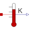

TemperatureSensorAbsolute temperature sensor in Kelvin |

|
Information
This information is part of the Modelica Standard Library maintained by the Modelica Association.
This is an ideal absolute temperature sensor which returns the temperature of the connected port in Kelvin as an output signal. The sensor itself has no thermal interaction with whatever it is connected to. Furthermore, no thermocouple-like lags are associated with this sensor model.
Connectors (2)
| T |
Type: RealOutput Description: Absolute temperature as output signal |
|
|---|---|---|
| port |
Type: HeatPort_a |
Used in Components (1)
|
Modelica.Electrical.Batteries.BaseClasses Partial cell with sensors |